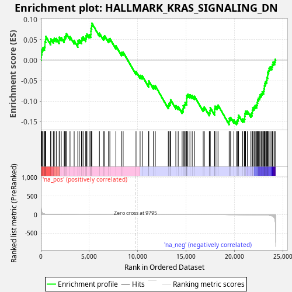
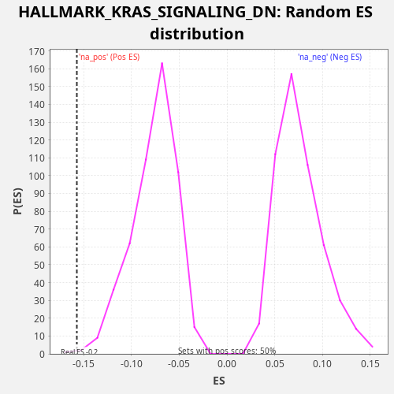

| Dataset | LabCL |
| Phenotype | NoPhenotypeAvailable |
| Upregulated in class | na_neg |
| GeneSet | HALLMARK_KRAS_SIGNALING_DN |
| Enrichment Score (ES) | -0.15724978 |
| Normalized Enrichment Score (NES) | -2.0429142 |
| Nominal p-value | 0.002004008 |
| FDR q-value | 0.011933795 |
| FWER p-Value | 0.107 |

| SYMBOL | RANK IN GENE LIST | RANK METRIC SCORE | RUNNING ES | CORE ENRICHMENT | |
|---|---|---|---|---|---|
| 1 | SLC12A3 | 19 | 275.182 | 0.0071 | No |
| 2 | MX1 | 44 | 140.748 | 0.0140 | No |
| 3 | RSAD2 | 89 | 76.274 | 0.0200 | No |
| 4 | IFI44L | 131 | 49.117 | 0.0262 | No |
| 5 | PTPRJ | 224 | 27.965 | 0.0302 | No |
| 6 | KCND1 | 367 | 17.091 | 0.0322 | No |
| 7 | CNTFR | 422 | 14.780 | 0.0379 | No |
| 8 | EDN2 | 423 | 14.715 | 0.0457 | No |
| 9 | PDE6B | 495 | 12.271 | 0.0507 | No |
| 10 | HTR1B | 511 | 11.824 | 0.0579 | No |
| 11 | PNMT | 1009 | 4.388 | 0.0452 | No |
| 12 | IDUA | 1029 | 4.259 | 0.0523 | No |
| 13 | SLC16A7 | 1287 | 2.879 | 0.0495 | No |
| 14 | PTGFR | 1384 | 2.502 | 0.0534 | No |
| 15 | EDN1 | 1590 | 1.930 | 0.0528 | No |
| 16 | C5 | 1893 | 1.362 | 0.0481 | No |
| 17 | CCDC106 | 1895 | 1.357 | 0.0559 | No |
| 18 | MTHFR | 2104 | 1.105 | 0.0552 | No |
| 19 | CLSTN3 | 2404 | 0.825 | 0.0507 | No |
| 20 | MSH5 | 2456 | 0.785 | 0.0564 | No |
| 21 | SGK1 | 2560 | 0.726 | 0.0600 | No |
| 22 | TGFB2 | 2642 | 0.671 | 0.0645 | No |
| 23 | P2RX6 | 3009 | 0.497 | 0.0572 | No |
| 24 | COPZ2 | 3437 | 0.350 | 0.0474 | No |
| 25 | BARD1 | 3819 | 0.266 | 0.0395 | No |
| 26 | SPHK2 | 3830 | 0.264 | 0.0470 | No |
| 27 | PDK2 | 3964 | 0.240 | 0.0493 | No |
| 28 | CHST2 | 4189 | 0.201 | 0.0479 | No |
| 29 | CPEB3 | 4229 | 0.196 | 0.0542 | No |
| 30 | IGFBP2 | 4363 | 0.180 | 0.0565 | No |
| 31 | NTF3 | 4629 | 0.147 | 0.0534 | No |
| 32 | NR6A1 | 4674 | 0.143 | 0.0594 | No |
| 33 | CDH16 | 4757 | 0.134 | 0.0639 | No |
| 34 | NRIP2 | 4994 | 0.114 | 0.0620 | No |
| 35 | SIDT1 | 5160 | 0.101 | 0.0630 | No |
| 36 | GTF3C5 | 5168 | 0.101 | 0.0706 | No |
| 37 | SKIL | 5186 | 0.100 | 0.0778 | No |
| 38 | HTR1D | 5242 | 0.096 | 0.0834 | No |
| 39 | ZC2HC1C | 5269 | 0.094 | 0.0902 | No |
| 40 | COQ8A | 6047 | 0.052 | 0.0658 | No |
| 41 | MAGIX | 6461 | 0.037 | 0.0566 | No |
| 42 | TEX15 | 6582 | 0.034 | 0.0595 | No |
| 43 | ASB7 | 6984 | 0.023 | 0.0507 | No |
| 44 | GDNF | 7126 | 0.020 | 0.0528 | No |
| 45 | MFSD6 | 7747 | 0.010 | 0.0349 | No |
| 46 | SLC25A23 | 8328 | 0.005 | 0.0188 | No |
| 47 | THRB | 8497 | 0.004 | 0.0197 | No |
| 48 | ACTC1 | 9827 | 0.000 | -0.0276 | No |
| 49 | SMPX | 10248 | 0.000 | -0.0371 | No |
| 50 | ZNF112 | 10464 | -0.000 | -0.0382 | No |
| 51 | VPS50 | 11136 | -0.001 | -0.0581 | No |
| 52 | RYR1 | 11143 | -0.002 | -0.0505 | No |
| 53 | MEFV | 11626 | -0.004 | -0.0626 | No |
| 54 | FGFR3 | 11818 | -0.005 | -0.0626 | No |
| 55 | RIBC2 | 13162 | -0.019 | -0.1104 | No |
| 56 | EPHA5 | 13229 | -0.020 | -0.1053 | No |
| 57 | CCNA1 | 13352 | -0.022 | -0.1025 | No |
| 58 | EGF | 13403 | -0.023 | -0.0967 | No |
| 59 | KMT2D | 13938 | -0.033 | -0.1110 | No |
| 60 | TG | 14183 | -0.040 | -0.1132 | No |
| 61 | GPR3 | 14589 | -0.050 | -0.1221 | No |
| 62 | ITGB1BP2 | 14698 | -0.054 | -0.1187 | No |
| 63 | THNSL2 | 14706 | -0.054 | -0.1111 | No |
| 64 | GPR19 | 14839 | -0.059 | -0.1087 | No |
| 65 | CLDN16 | 14901 | -0.061 | -0.1034 | No |
| 66 | ABCG4 | 15051 | -0.067 | -0.1017 | No |
| 67 | CLDN8 | 15060 | -0.067 | -0.0942 | No |
| 68 | NR4A2 | 15064 | -0.068 | -0.0864 | No |
| 69 | ABCB11 | 15181 | -0.072 | -0.0833 | No |
| 70 | ADRA2C | 15395 | -0.079 | -0.0843 | No |
| 71 | GRID2 | 15629 | -0.089 | -0.0861 | No |
| 72 | AKR1B10 | 15868 | -0.099 | -0.0881 | No |
| 73 | CAMK1D | 16768 | -0.153 | -0.1175 | No |
| 74 | SNCB | 16883 | -0.160 | -0.1143 | No |
| 75 | ALOX12B | 17395 | -0.203 | -0.1277 | No |
| 76 | GPRC5C | 17473 | -0.210 | -0.1230 | No |
| 77 | MAST3 | 17493 | -0.211 | -0.1159 | No |
| 78 | TFCP2L1 | 17943 | -0.259 | -0.1266 | No |
| 79 | SLC30A3 | 17951 | -0.261 | -0.1190 | No |
| 80 | KCNN1 | 17979 | -0.264 | -0.1123 | No |
| 81 | TGM1 | 18185 | -0.289 | -0.1129 | No |
| 82 | CALML5 | 18298 | -0.305 | -0.1097 | No |
| 83 | TFF2 | 19446 | -0.514 | -0.1494 | Yes |
| 84 | GAMT | 19459 | -0.516 | -0.1420 | Yes |
| 85 | SNN | 19595 | -0.552 | -0.1397 | Yes |
| 86 | BMPR1B | 19936 | -0.643 | -0.1459 | Yes |
| 87 | FGGY | 20209 | -0.738 | -0.1494 | Yes |
| 88 | CELSR2 | 20318 | -0.781 | -0.1460 | Yes |
| 89 | RYR2 | 20386 | -0.810 | -0.1409 | Yes |
| 90 | YPEL1 | 20422 | -0.824 | -0.1344 | Yes |
| 91 | ENTPD7 | 20835 | -1.044 | -0.1436 | Yes |
| 92 | BRDT | 21011 | -1.145 | -0.1430 | Yes |
| 93 | CYP39A1 | 21057 | -1.166 | -0.1370 | Yes |
| 94 | SHOX2 | 21070 | -1.173 | -0.1296 | Yes |
| 95 | SYNPO | 21141 | -1.219 | -0.1247 | Yes |
| 96 | CDKAL1 | 21326 | -1.358 | -0.1244 | Yes |
| 97 | MYO15A | 21692 | -1.740 | -0.1317 | Yes |
| 98 | KLK8 | 21805 | -1.866 | -0.1285 | Yes |
| 99 | BTG2 | 21839 | -1.923 | -0.1220 | Yes |
| 100 | KCNQ2 | 21895 | -2.027 | -0.1164 | Yes |
| 101 | KLK7 | 22029 | -2.242 | -0.1140 | Yes |
| 102 | EDAR | 22137 | -2.452 | -0.1106 | Yes |
| 103 | KRT4 | 22289 | -2.808 | -0.1089 | Yes |
| 104 | SLC6A14 | 22344 | -2.936 | -0.1033 | Yes |
| 105 | NUDT11 | 22391 | -3.116 | -0.0973 | Yes |
| 106 | STAG3 | 22475 | -3.387 | -0.0929 | Yes |
| 107 | DLK2 | 22571 | -3.737 | -0.0890 | Yes |
| 108 | SPTBN2 | 22648 | -4.021 | -0.0843 | Yes |
| 109 | TCF7L1 | 22784 | -4.782 | -0.0820 | Yes |
| 110 | KRT13 | 22861 | -5.266 | -0.0773 | Yes |
| 111 | PLAG1 | 22998 | -6.241 | -0.0750 | Yes |
| 112 | TENM2 | 23049 | -6.668 | -0.0692 | Yes |
| 113 | KRT1 | 23091 | -7.014 | -0.0630 | Yes |
| 114 | LFNG | 23126 | -7.327 | -0.0566 | Yes |
| 115 | HSD11B2 | 23219 | -8.531 | -0.0525 | Yes |
| 116 | DTNB | 23324 | -10.235 | -0.0490 | Yes |
| 117 | TAS2R4 | 23350 | -10.693 | -0.0421 | Yes |
| 118 | LYPD3 | 23425 | -12.064 | -0.0373 | Yes |
| 119 | SPRR3 | 23427 | -12.182 | -0.0295 | Yes |
| 120 | UPK3B | 23526 | -14.307 | -0.0257 | Yes |
| 121 | PKP1 | 23573 | -15.733 | -0.0197 | Yes |
| 122 | WNT16 | 23684 | -20.493 | -0.0164 | Yes |
| 123 | EFHD1 | 23855 | -30.125 | -0.0156 | Yes |
| 124 | SERPINB2 | 23924 | -38.559 | -0.0105 | Yes |
| 125 | SLC29A3 | 23981 | -47.184 | -0.0050 | Yes |
| 126 | KRT15 | 24140 | -95.371 | -0.0036 | Yes |
| 127 | KRT5 | 24198 | -163.511 | 0.0019 | Yes |

{kind=link}
{kind=link}